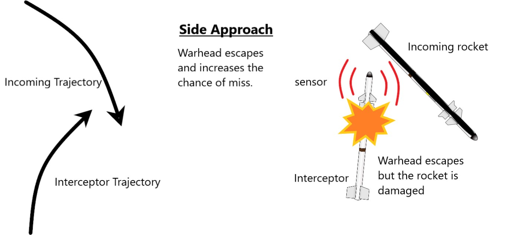

In the past few days, the political tension between ISRAEL and GAZA has gone up so highly that about 1500 missiles were fired from other side to Israel. But in the night sky, the Israel defense system neutralize about 90% of the missiles as per the information. They achieved this by using Iron Dome.
ANALOGY AND WORKING OF IRON DOME
The full setup of iron dome missile defense batteries can defend against short range almost 45 miles.
- The first is the Radar Unit . The Radar Unit detects and identifies the incoming rocket. Then, it analysis the trajectory of that rocket and its speed to relay the information to Battery Control Center. The Radar Unit continuously track the area and can detects multiple objects with a great accuracy. The Radar unit is so much sophisticated that it can work in any weather condition with high accuracy. Even it can detect a small drone and artillery. That is the reason why this mechanism is called Iron Dome Shield as this Radar Unit act as shield to protect the residential area. Even the government of Canada bought these radars from Israel.
- The tracking data and information is sent to the Battle and Control Unit. The Control Unit calculate the trajectory of the incoming rocket. If the trajectory of the incoming rocket is out of residential area then they left it. If the trajectory is following to the residential area, then the Control Unit commands to fire the Tamir Interceptor Missile.
- The Missile Launcher fired the missile. At times for single incoming rocket, two Tamir missile are launched to be extra safe and to sure that it intercepts and detonated the incoming rocket.
- The most importance is then Guidance of Tamir Missile. The Tamir missile has an array antenna which act as transmitter and receiver. This array antenna is considered as the best designed antenna till date. The Tamir Missile receives constant guidance and updates from the Control Unit through the array.
- Finally, the Interception . Interceptor missile destroys the incoming rocket by bursting near it, in the mid air.

WORKING OF TAMIR INTERCEPTOR MISSILE
If you notice Tamir missile, it has fins-like structure which helps in the real time maneuvering. It means that the missile can change its direction in the air to reach its target. It is designed with fins which acts as modified small wing to control the Tamir Missile and change its direction in air.
At the surface of the Tamir Interceptor Missile, high quality sensors are present which work on laser guidance/optoelectronic. This sensor provides laser spray pattern around the Tamir Missile. If the incoming rocket pass and block the spray pattern laser, the proximity fuse of Tamir Interceptor gives command to detonate Tamir Missile. And it bursts out resulting the incoming rocket to blast off.

THREE DIFFERENT WAYS OF INTERCEPTION
- FRONT APPROACH- The Tamir Interceptor go straight and when the incoming rocket pass by it, blocks the spray pattern laser, it bursts and destroys the warhead of incoming rocket. Note that they may not collide but the proximity fuses present inside it gives command to detonate when the spray pattern is blocked. It is the most effective ways to destroy the incoming rocket’s warhead with great accuracy.
- SIDE APPROACH- If the Tamir Missile approach by sideways and the incoming rocket block the spray pattern laser, then the missile bursts to blow up the incoming rocket. But in the side approach, it misses the warhead of the incoming rocket. This approach also increases the chance of miss.
- REAR APPROACH- In this case, the trajectory of incoming rocket is different from the Tamir Missile. As a result, the Tamir Missile do real time maneuvering to change its trajectory and chase the rocket to approach from the back side. Here, when the Tamir Missile chases the incoming rocket, the spray pattern gets blocked by the tail of the incoming rocket and it burst. The warhead of the incoming rocket escapes.

This way it neutralizes the rocket in the mid air.
ADDITIONAL DETAILS
DESIGNER- Rafael Advanced Defense System and Israel Aerospace Industries.
DESIGNED IN- 2005- Present
NO. BUILT – 10 batteries deployed